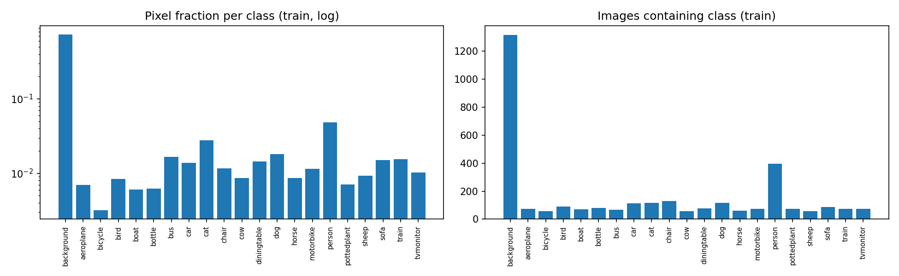
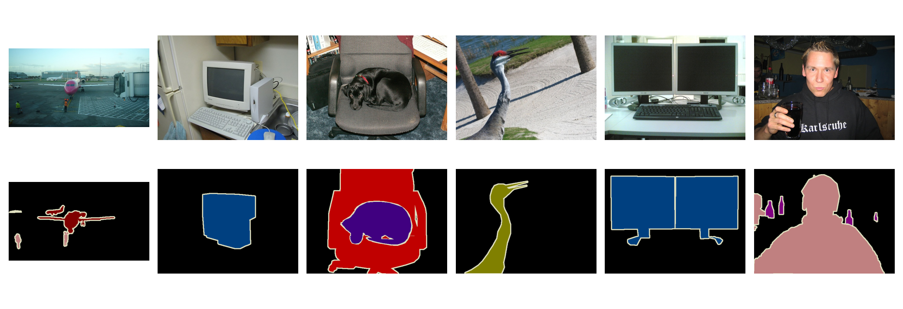
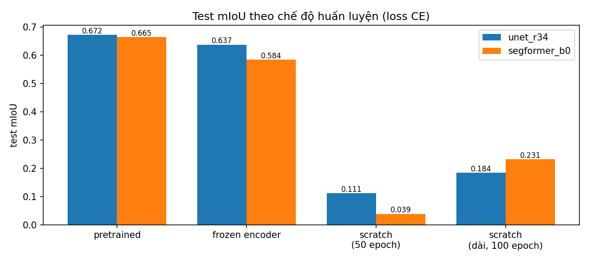
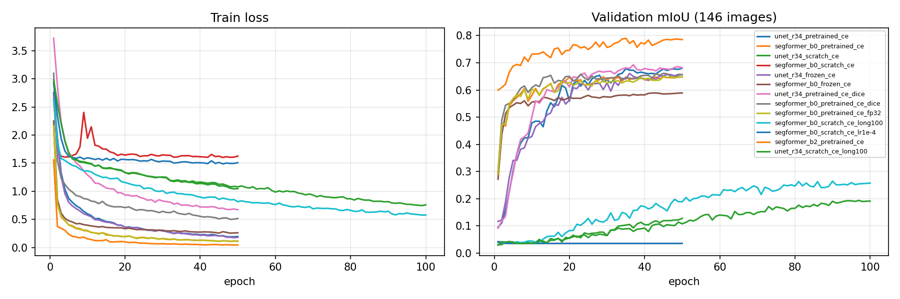
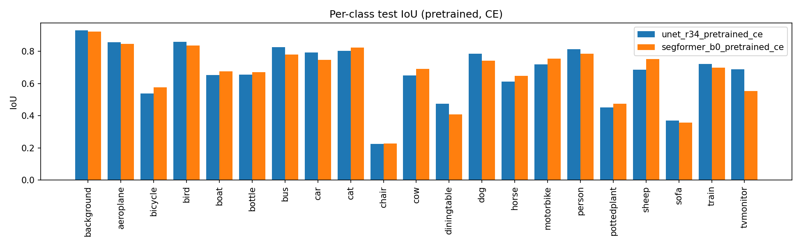
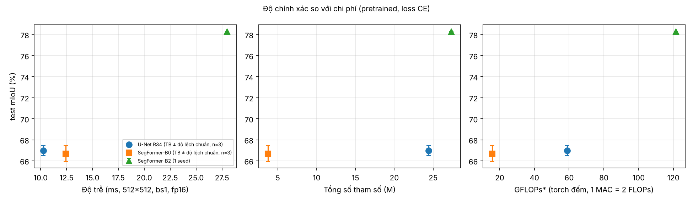
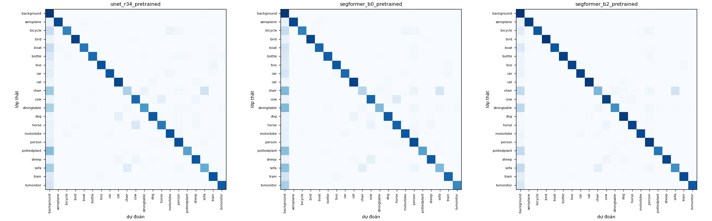
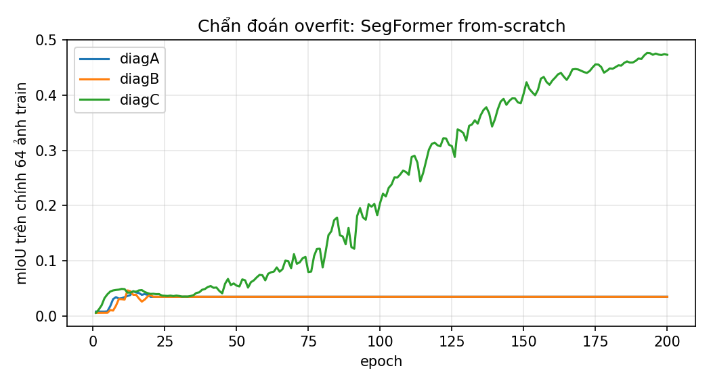
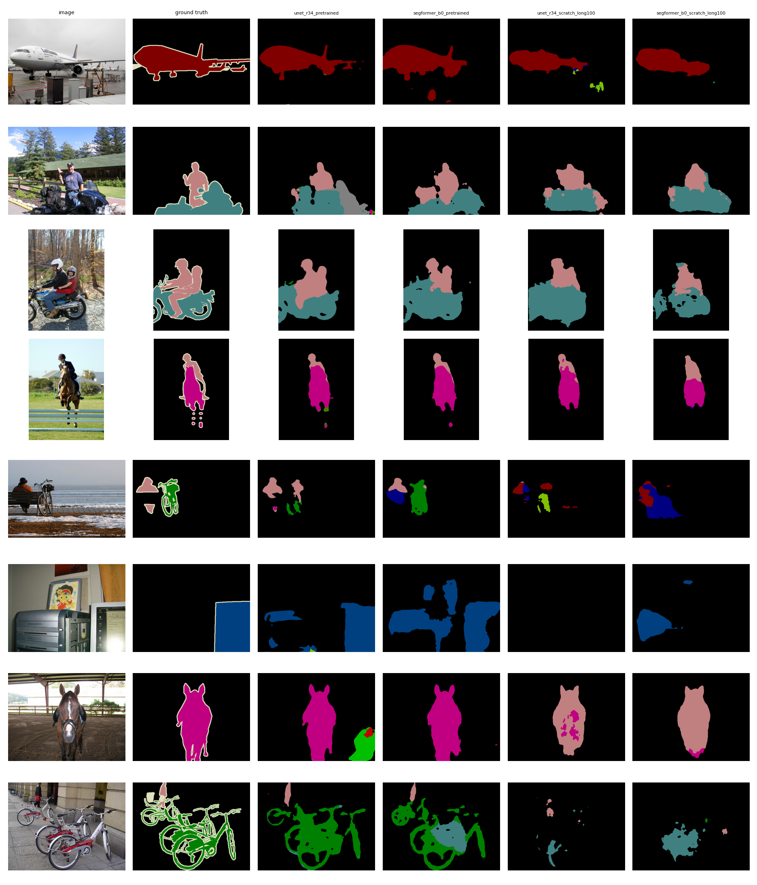

CO5085 – Học sâu và ứng dụng trong thị giác máy tính – HK 261 (2026–2027)
Gán nhãn cho từng pixel (20 lớp vật thể và background). Tập train chính thức 1.464 ảnh được chia (seed 42) thành 1318 train và 146 validation; tập val chính thức (1449 ảnh) dùng làm test. Không dùng SBD. Viền vật thể có nhãn 255 và bị bỏ qua khi tính loss và metric. Giấy phép: ảnh VOC lấy từ Flickr, mình chỉ dùng cho học tập.


Huấn luyện: phóng tỉ lệ 0,5–2,0, lật ngang, cắt ngẫu nhiên 384×384, chuẩn hóa theo ImageNet, batch 16. Đánh giá: không augmentation; ảnh đệm lên 512×512, phần đệm có nhãn 255 nên không tính.
SegFormer gồm encoder Transformer phân cấp (MiT) cho đặc trưng ở 4 độ phân giải (1/4, 1/8, 1/16, 1/32), không dùng positional encoding mà dùng Mix-FFN (conv 3×3 trong FFN), self-attention hiệu quả (rút gọn chuỗi Key), và decoder chỉ gồm các lớp MLP. Phân tích đầy đủ (phương pháp, thí nghiệm, hạn chế, đối chiếu) nằm ở mục 3 của báo cáo PDF.
2 kiến trúc × 3 chế độ (from-scratch, pretrained fine-tune toàn bộ, pretrained đóng băng encoder) với loss CE, thêm ablation CE + Dice cho hai mô hình pretrained. Chung: AdamW (weight decay 0.01), lịch học poly có warm-up, fp16, 50 epoch, seed 42, chọn epoch theo mIoU trên validation, đo test một lần. Learning rate: from-scratch 0.0005; pretrained/frozen: encoder 0.0001, decoder 0.001. Encoder pretrain: resnet34.a1_in1k và nvidia/mit-b0 (và nvidia/mit-b2 cho SegFormer-B2) (đều ImageNet-1K, công thức huấn luyện khác nhau). Cấu hình pretrained chính (CE) của hai mô hình được chạy 3 seed (42, 1, 2); các cấu hình khác chạy một lần (seed 42). Seed khác nhau chỉ đổi khởi tạo decoder và thứ tự/augmentation, split dữ liệu giữ nguyên. Các dòng có ghi chú trong ngoặc là lần chạy bổ sung: chạy dài hoặc đổi cấu hình cho from-scratch sau khi SegFormer không học được ở cấu hình mặc định, và kiểm tra fp32 cho SegFormer pretrained. Chẩn đoán overfit (segformer_b0_scratch_ce_diagA): huấn luyện trên 64 ảnh, mIoU trên chính các ảnh đó là 4.49% sau 200 epoch. Chẩn đoán overfit (segformer_b0_scratch_ce_diagB): huấn luyện trên 64 ảnh, mIoU trên chính các ảnh đó là 4.63% sau 200 epoch. Chẩn đoán overfit (segformer_b0_scratch_ce_diagC): huấn luyện trên 64 ảnh, mIoU trên chính các ảnh đó là 47.68% sau 200 epoch.
| Kiến trúc | Chế độ | Loss | Params trainable | Val mIoU | Test mIoU | PixAcc | mDice | s/epoch | ms (512) | GFLOPs* |
|---|---|---|---|---|---|---|---|---|---|---|
| U-Net (ResNet-34) | pretrained, fine-tune toàn bộ | CE | 24,429,941 | 68.05 | 67.18 | 92.53 | 78.91 | 24.5 | 10.3 | 58.9 |
| SegFormer-B0 | pretrained, fine-tune toàn bộ | CE | 3,719,541 | 64.83 | 66.46 | 92.16 | 78.39 | 23.7 | 12.4 | 15.7 |
| U-Net (ResNet-34) | from-scratch | CE | 24,429,941 | 12.77 | 11.11 | 76.14 | 16.21 | 24.8 | 10.3 | 58.9 |
| SegFormer-B0 | from-scratch | CE | 3,719,541 | 4.00 | 3.87 | 71.44 | 4.78 | 23.7 | 10.4 | 15.7 |
| U-Net (ResNet-34) | pretrained, đóng băng encoder | CE | 3,145,269 | 66.07 | 63.70 | 91.78 | 76.22 | 22.3 | 10.8 | 58.9 |
| SegFormer-B0 | pretrained, đóng băng encoder | CE | 400,149 | 58.92 | 58.44 | 89.55 | 72.34 | 22.3 | 12.4 | 15.7 |
| U-Net (ResNet-34) | pretrained, fine-tune toàn bộ | CE + Dice | 24,429,941 | 69.28 | 67.48 | 92.35 | 79.27 | 27.3 | 10.8 | 58.9 |
| SegFormer-B0 | pretrained, fine-tune toàn bộ | CE + Dice | 3,719,541 | 66.12 | 67.02 | 92.20 | 78.91 | 25.9 | 10.5 | 15.7 |
| SegFormer-B0 | pretrained, fine-tune toàn bộ (lr encoder 0.0001, decoder 0.001, 50 epoch, fp32) | CE | 3,719,541 | 64.94 | 66.68 | 92.09 | 78.63 | 34.9 | 12.6 | 15.7 |
| SegFormer-B0 | from-scratch (lr 0.0002, 100 epoch, cắt gradient 1.0, fp32, khởi tạo conv theo mã gốc của SegFormer) | CE | 3,719,541 | 26.47 | 23.14 | 78.93 | 34.57 | 35.5 | 12.4 | 15.7 |
| SegFormer-B0 | from-scratch (lr 0.0001, 50 epoch) | CE | 3,719,541 | 4.20 | 4.04 | 65.94 | 5.34 | 24.4 | 11.2 | 15.7 |
| SegFormer-B2 | pretrained, fine-tune toàn bộ (lr encoder 0.0001, decoder 0.001, 50 epoch) | CE | 27,362,773 | 79.03 | 78.31 | 95.10 | 86.89 | 44.3 | 28.0 | 121.4 |
| U-Net (ResNet-34) | from-scratch (lr 0.0005, 100 epoch) | CE | 24,429,941 | 19.36 | 18.43 | 78.01 | 27.24 | 24.9 | 10.6 | 58.9 |
| Run | Seed | Test mIoU từng seed (%) | Trung bình ± độ lệch chuẩn |
|---|---|---|---|
| segformer_b0_pretrained_ce | 42, 1, 2 | 66.46, 67.52, 66.08 | 66.68 ± 0.75 |
| unet_r34_pretrained_ce | 42, 1, 2 | 67.18, 67.29, 66.43 | 66.97 ± 0.47 |
Seed chỉ đổi khởi tạo decoder và thứ tự/augmentation; split dữ liệu giữ nguyên.
mIoU, PixAcc, mDice tính theo %, trên 1449 ảnh test. Độ trễ đo với ảnh 512×512, batch 1, fp16, Tesla T4; cùng một kiến trúc dao động khoảng 2 ms giữa các lần đo. *GFLOPs do torch FlopCounterMode đếm (một phép nhân-cộng tính là 2 FLOPs), chưa so trực tiếp được với con số trong paper SegFormer.







Bảng dưới đây tổng hợp bốn cấu hình SegFormer-B0 sử dụng Cross-Entropy (CE) trong thí nghiệm của mình. Pretrained là mô hình khởi tạo từ trọng số đã huấn luyện trước và fine-tune; from-scratch khởi tạo ngẫu nhiên; frozen là giữ cố định encoder và chỉ huấn luyện phần còn lại.
| Cấu hình SegFormer-B0 | Test mIoU | Pixel Accuracy | Mean Dice | Best epoch |
|---|---|---|---|---|
| Pretrained + fine-tuning | 66,46% | 92,16% | 78,39% | 29 |
| From-scratch (50 epoch) | 3,87% | 71,44% | 4,78% | 1 |
| Frozen encoder | 58,44% | 89,55% | 72,34% | 43 |
| From-scratch (100 epoch) | 23,14% | 78,93% | 34,57% | 90 |
Pretrained + fine-tuning đạt 66,46% mIoU, cao hơn đáng kể so với frozen encoder (58,44%) và from-scratch 50 epoch (3,87%). Điều này cho thấy trong thiết lập dữ liệu và huấn luyện hiện tại, việc khởi tạo từ trọng số pretrained có vai trò rất lớn. Fine-tuning toàn bộ encoder tiếp tục cải thiện kết quả so với đóng băng encoder, có thể vì các đặc trưng được điều chỉnh phù hợp hơn với phân phối ảnh và nhãn của VOC.
Lưu ý khi so sánh chế độ frozen: ở SegFormer-B0 chỉ decoder (khoảng 0,40M tham số) được huấn luyện, còn ở U-Net là khoảng 3,15M; mức giảm so với fine-tune toàn bộ (8,0 điểm ở SegFormer-B0, 3,5 điểm ở U-Net) vì vậy chưa so sánh công bằng giữa hai kiến trúc.
Ở chế độ from-scratch, hai lần chạy không chỉ khác nhau về số epoch. Lần chạy 50 epoch (fp16) không học được: mô hình gần như chỉ dự đoán background (mIoU 3,87%, epoch tốt nhất là epoch 1). Thử nghiệm chẩn đoán cho mô hình học thuộc 64 ảnh cho thấy cùng một cấu hình (learning rate 2e-4, khởi tạo conv theo mã gốc, cắt gradient 1,0) chỉ đạt 4,63% khi tính bằng fp16 nhưng đạt 47,68% khi tính bằng fp32; vì vậy nguyên nhân chính của thất bại là độ chính xác số học fp16 (cơ chế cụ thể chưa được điều tra), không phải số epoch hay lượng dữ liệu. Lần chạy 100 epoch dùng fp32 cùng cắt gradient, khởi tạo theo mã gốc và learning rate 2e-4, đạt 23,14% (epoch tốt nhất 90/100, nên chưa hội tụ). U-Net from-scratch đạt 11,11% sau 50 epoch và 18,43% sau 100 epoch (cùng dùng fp16; learning rate 5e-4 cho lần chạy 100 epoch). Do công thức huấn luyện của hai bên khác nhau, chưa thể kết luận kiến trúc nào học từ đầu tốt hơn. Dù vậy, kết quả from-scratch vẫn thấp hơn rất nhiều so với pretrained, nên số liệu hiện tại không ủng hộ ý cho rằng chỉ cần tăng số epoch là thay được pretraining.
Với 3 seed (split dữ liệu giữ nguyên), U-Net ResNet34 pretrained đạt test mIoU 67,18, 67,29, 66,43 (trung bình 66,97 ± 0,47) và SegFormer-B0 pretrained đạt 66,46, 67,52, 66,08 (trung bình 66,68 ± 0,75). Chênh lệch giữa hai trung bình (0,28 điểm) nhỏ hơn độ lệch chuẩn của mỗi bên, nên chưa thể kết luận bên nào tốt hơn về mIoU tổng. Giá trị nổi bật của B0 nằm ở số tham số và FLOPs thấp hơn, không phải độ chính xác cao hơn.
Để so sánh hiệu quả tính toán, sử dụng các số liệu được đo tại đầu vào 512 × 512, batch size 1 trong bảng kết quả của mình:
| Mô hình | mIoU | Params | GFLOPs | Latency (ms) | Thời gian/epoch (s) | Peak memory (MB) |
|---|---|---|---|---|---|---|
| U-Net ResNet34 pretrained | 67,18% | 24,43M | 58,9 | 10,3 | 24,5 | 2.451 |
| SegFormer-B0 pretrained | 66,46% | 3,72M | 15,7 | 12,4 | 23,7 | 2.948 |
| SegFormer-B2 pretrained | 78,31% | 27,36M | 121,4 | 28,0 | 44,3 | 8.805 |
SegFormer-B0 có 3,72 triệu tham số, ít hơn khoảng 84,8% so với U-Net ResNet34 (24,43 triệu). GFLOPs của B0 là 15,7, thấp hơn khoảng 73,3% so với 58,9 GFLOPs của U-Net. Latency đo được của B0 là 12,4 ms, của U-Net là 10,3 ms. Tuy nhiên, cùng kiến trúc B0 nhưng cấu hình khác đo ra 10,4–12,5 ms (ví dụ lần chạy from-scratch: 10,4 ms), nên chênh lệch khoảng 2 ms nằm trong dao động đo và chưa kết luận được B0 chậm hơn U-Net. Điều có thể nói là Params và FLOPs thấp không tự động đồng nghĩa với latency thấp: B0 có ít tham số hơn khoảng 6,6 lần và ít FLOPs hơn khoảng 3,8 lần nhưng latency không thấp hơn.
SegFormer-B2 đạt 78,31% mIoU, cao hơn B0 11,85 điểm phần trăm, nhưng chi phí cũng tăng đáng kể: 27,36M tham số, 121,4 GFLOPs, 28,0 ms latency và 8.805 MB peak memory. Như vậy, B2 là lựa chọn có độ chính xác tốt hơn trong thí nghiệm, nhưng đòi hỏi tài nguyên lớn hơn nhiều. U-Net có latency đo thấp nhất trong ba cấu hình (chênh lệch với B0 nằm trong dao động đo), còn B0 có lợi thế rõ về số tham số và FLOPs.
Một điểm cần báo cáo minh bạch là peak memory của B0 (2.948 MB) cao hơn U-Net (2.451 MB) trong bảng đo hiện tại. Vì vậy, không nên khẳng định B0 tiết kiệm bộ nhớ hơn U-Net dựa trên kết quả này. Cần giữ nguyên điều kiện đo khi so sánh và tránh suy rộng số liệu sang phần cứng hoặc batch size khác.
Ghi chú đo: peak memory là đỉnh trong cả huấn luyện và validation (batch 16, ảnh 512×512), không phải bộ nhớ huấn luyện thuần. GFLOPs do torch FlopCounterMode đếm (một phép nhân-cộng tính là 2 FLOPs), nên con số 15,7 GFLOPs của B0 chưa so trực tiếp được với 8,4G trong paper, vốn có thể đếm theo quy ước khác. Độ trễ đo ở fp16, ảnh 512×512, batch 1 trên GPU Tesla T4 và dao động khoảng 2 ms giữa các lần đo.
Kết quả IoU theo lớp cho thấy SegFormer-B0 gặp khó khăn rõ nhất ở chair, tiếp theo là sofa và diningtable. Khi tăng quy mô encoder lên B2, IoU của các lớp này được cải thiện, nhưng chair, sofa và diningtable vẫn là ba lớp có IoU thấp nhất.
| Lớp | SegFormer-B0 IoU | SegFormer-B2 IoU | Nhận xét |
|---|---|---|---|
| chair | 22,69% | 34,67% | Thấp nhất ở cả B0 và B2; hình dạng và tư thế đa dạng. |
| sofa | 35,66% | 51,01% | Có cải thiện rõ khi dùng B2. |
| diningtable | 40,80% | 57,38% | Dễ nhầm với background và các vật thể xung quanh. |
| pottedplant | 47,28% | 62,75% | Biên không đều, hình dạng và kết cấu đa dạng. |
| tvmonitor | 55,32% | 71,54% | Một trong các lớp có IoU thấp hơn ở B0. |
Confusion matrix của B0 cho thấy một tỷ lệ đáng kể pixel thuộc các lớp khó bị dự đoán thành background: chair → background 44,7%; diningtable → background 44,7%; pottedplant → background 42,2%; sofa → background 41,5%; tvmonitor → background 34,0%. Đây là dấu hiệu cho thấy mô hình chưa tách được một số vùng foreground khỏi nền.
Phân bố pixel trong tập train cũng không đồng đều: background chiếm khoảng 73,22% tổng số pixel; chair chiếm 1,17%; sofa 1,50%; diningtable 1,44%; pottedplant 0,71%. Sự chênh lệch này có thể khiến mô hình học thiên về lớp chiếm ưu thế. Ngoài ra, các lớp như chair và diningtable có hình dạng, kích thước, góc nhìn và mức độ che khuất đa dạng; một số vùng còn có màu sắc hoặc kết cấu gần với background. Đây là các giả thuyết giải thích hợp lý dựa trên phân bố và confusion matrix, nhưng không thể khẳng định từng yếu tố là nguyên nhân duy nhất nếu chưa có thí nghiệm kiểm soát riêng.
Đáng chú ý, B2 cải thiện IoU chair từ 22,69% lên 34,67%, sofa từ 35,66% lên 51,01% và diningtable từ 40,80% lên 57,38%. Điều này gợi ý encoder lớn hơn có thể học biểu diễn tốt hơn cho các lớp khó trong thiết lập hiện tại. Tuy nhiên, nhầm lẫn chair → sofa ở B2 vẫn ở mức 18,2%, cho thấy tăng quy mô mô hình chưa loại bỏ hoàn toàn sự tương đồng thị giác giữa các lớp.
Cấu hình và kết quả chính của mình được tóm tắt như sau:
| Thành phần | Thiết lập/kết quả |
|---|---|
| Bài toán | Semantic segmentation trên Pascal VOC, dự đoán nhãn cho từng pixel. |
| Chia dữ liệu | Train: 1.318 ảnh; validation: 146 ảnh; test: 1.449 ảnh. |
| Mô hình | SegFormer-B0 và SegFormer-B2; đối chứng U-Net với backbone ResNet34. |
| Biến thể huấn luyện | Pretrained fine-tuning, from-scratch, frozen encoder; thử nghiệm CE và CE + Dice. |
| Độ phân giải đo hiệu năng | 512 × 512 cho latency và GFLOPs; các cấu hình huấn luyện sử dụng crop 384 theo thiết lập thực nghiệm của mình. |
| Kết quả nổi bật | SegFormer-B0 pretrained + CE: 66,46% mIoU; SegFormer-B2 pretrained + CE: 78,31%; U-Net ResNet34 pretrained + CE: 67,18%. |
So với paper, bài làm có một số khác biệt quan trọng. Thứ nhất, paper đánh giá trên ADE20K, Cityscapes và COCO-Stuff, trong khi mình thực nghiệm trên Pascal VOC. Do số lớp, phân bố dữ liệu và độ khó của từng tập khác nhau, không thể so sánh trực tiếp mIoU của mình với mIoU trong paper để kết luận mô hình tái hiện tốt hay kém hơn tác giả.
Thứ hai, paper nghiên cứu hệ MiT từ B0 đến B5 và đánh giá SegFormer trong nhiều cấu hình benchmark; mình tập trung vào B0 và B2, đồng thời dùng U-Net ResNet34 làm baseline. Thứ ba, mình mở rộng phân tích bằng cách so sánh pretrained, from-scratch, frozen encoder và biến thể loss CE + Dice. Đây là các thí nghiệm bổ sung nhằm tìm hiểu ảnh hưởng của khởi tạo trọng số, mức độ cập nhật encoder và hàm mất mát trên tập dữ liệu của mình.
Về cách huấn luyện, paper dùng mmsegmentation, AdamW với learning rate 6e-5, crop 512, 160K bước (ablation 40K bước) và batch 16; bài làm dùng PyTorch/HuggingFace, crop 384, 50 epoch (khoảng 4.100 bước, batch 16), learning rate 1e-4 cho encoder và 1e-3 cho decoder, với augmentation tương tự paper (scale 0,5–2,0, lật ngang, cắt ngẫu nhiên). Kết quả của SegFormer-B2 chỉ chạy một seed, còn U-Net và SegFormer-B0 pretrained có 3 seed (Bảng 2).
Kết quả CE + Dice của SegFormer-B0 đạt 67,02% mIoU, cao hơn nhẹ so với CE (66,46%). Mức cải thiện là 0,56 điểm phần trăm; do đó nên mô tả đây là cải thiện nhỏ trong lần chạy được ghi nhận, không nên khẳng định Dice luôn tốt hơn nếu chưa có nhiều lần chạy lặp và phân tích độ biến thiên. SegFormer-B2 pretrained + CE đạt 78,31% mIoU, là kết quả cao nhất trong các cấu hình chính được tổng hợp.
Từ thực nghiệm có thể rút ra bốn bài học. Một là pretrained có ảnh hưởng rất lớn trong bối cảnh dữ liệu gán nhãn hạn chế; fine-tuning toàn encoder tốt hơn frozen encoder trong các cấu hình đã thử. Hai là tăng quy mô từ B0 lên B2 cải thiện đáng kể mIoU nhưng làm tăng mạnh FLOPs, latency và bộ nhớ. Ba là đánh giá tổng thể bằng mIoU chưa đủ; IoU từng lớp và confusion matrix giúp phát hiện các lớp khó và xu hướng nhầm foreground thành background. Bốn là chỉ số tính toán lý thuyết như Params/GFLOPs cần được báo cáo song song với latency và bộ nhớ đo thực tế.
Nhìn chung, kết quả cho thấy SegFormer có khả năng chuyển giao tốt sang Pascal VOC khi sử dụng trọng số pretrained. B0 là cấu hình tương đối gọn để khảo sát pipeline, còn B2 cho chất lượng phân đoạn cao hơn trong thí nghiệm này nhưng đi kèm chi phí lớn hơn. Vì vậy, lựa chọn mô hình cuối cùng cần dựa trên mục tiêu ưu tiên độ chính xác hay giới hạn tài nguyên, thay vì chỉ dựa vào một chỉ số đơn lẻ.
SegFormer kết hợp encoder Transformer phân cấp MiT với decoder All-MLP gọn nhẹ để khai thác đặc trưng đa cấp cho semantic segmentation. Các thiết kế Efficient Self-Attention và Mix-FFN giải quyết hai vấn đề quan trọng của Transformer khi xử lý ảnh: chi phí attention trên chuỗi dài và sự phụ thuộc vào positional encoding cố định. Các thí nghiệm trong paper hỗ trợ hiệu quả của những lựa chọn kiến trúc này trên ADE20K, Cityscapes và COCO-Stuff.
Trên Pascal VOC, thực nghiệm của mình cho thấy pretrained là yếu tố quan trọng; SegFormer-B0 đạt mIoU gần với U-Net ResNet34 nhưng có ít tham số và FLOPs hơn, trong khi SegFormer-B2 đạt mIoU cao nhất với chi phí tính toán lớn hơn đáng kể. Những lớp như chair, sofa và diningtable vẫn là thách thức, một phần thể hiện qua mất cân bằng pixel và nhầm lẫn với background. Do đó, đánh giá mô hình cần kết hợp độ chính xác tổng thể, chất lượng theo lớp và chi phí suy luận thực tế.
Các cấu hình pretrained chính của hai mô hình được chạy 3 seed, các cấu hình còn lại chỉ một seed nên chênh lệch nhỏ ở đó chưa đủ để kết luận; không dùng SBD (chỉ 1318 ảnh train); không tinh chỉnh siêu tham số riêng cho từng mô hình; các lần chạy chính dùng fp16; chạy lại SegFormer pretrained (CE) bằng fp32 cho 66.68% so với 66.46% ở fp16, các mô hình khác chưa chạy lại; SegFormer from-scratch ở fp16 không học được (50 epoch) còn ở fp32 thì học được, nên so sánh from-scratch dùng các lần chạy dài; lần chạy from-scratch dài của hai mô hình khác nhau về công thức (độ chính xác số học, cắt gradient, khởi tạo, learning rate) nên không hoàn toàn công bằng; epoch tốt nhất là 90/100 (SegFormer) và 97/100 (U-Net), gần sát epoch cuối nên chưa thể coi là đã hội tụ; chỉ thử SegFormer-B0 và B2; hai encoder pretrain bằng công thức khác nhau.